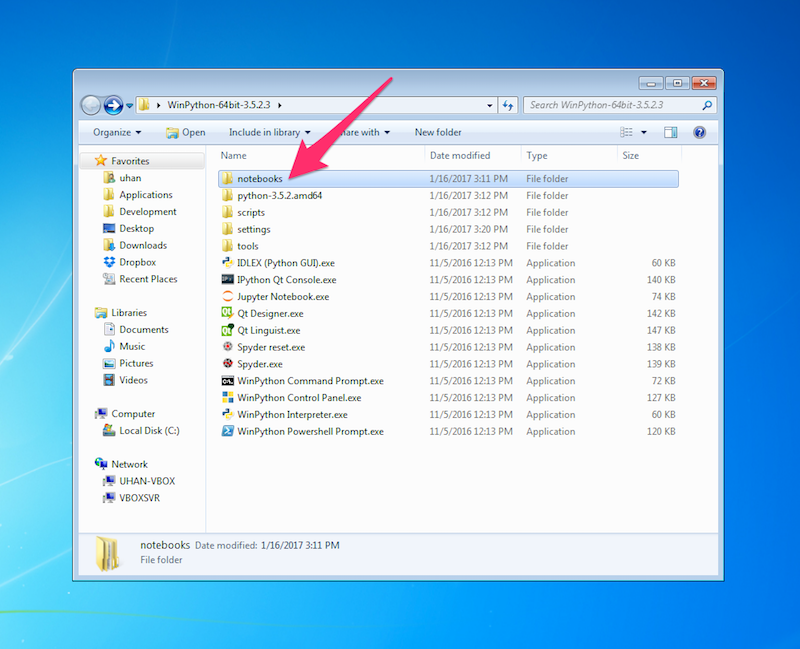

Installing Python and Jupyter
SA367 Spring 2017
Last updated: 16 January 2017
Overview
For this course, we will use WinPython, an easy-to-use Python distribution for Windows.
WinPython comes with Jupyter and a collection of useful scientific computing packages such as NumPy, SciPy and Matplotlib.
Instructions
-
Go to the WinPython webpage here to download the 64-bit version of WinPython 3.5.2.3 — see the pictures below.
-
Install WinPython by launching the .exe file you downloaded in the previous step.
The installer will ask you where to put the WinPython folder.
As you can see in the picture below, I just put it on my Desktop so that it's easy to find.
-
Once the installation is complete, open the WinPython folder.
To launch Jupyter, open Jupyter Notebook in the WinPython folder.
A command prompt window titled "C:\Windows\system32\cmd.exe - winipython_notebook.bat" should appear — just leave this open while you use Jupyter. In addition, your default browser should open with the Jupyter file browser.
See the picture below.
If you accidentally close your browser, you can get back to the Jupyter file browser at http://localhost:8888/, as long as the command prompt window that opened earlier is still open.
-
Going forward, put any Jupyter notebooks you want to use in the "notebooks" folder in the WinPython folder:
